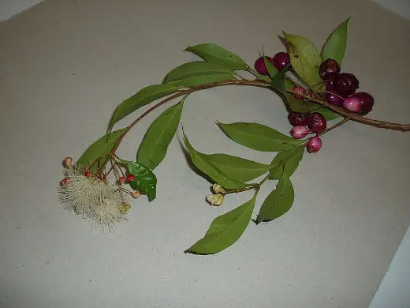

Wild fruit · Mar–Jun
Magenta lilly pilly
Syzygium paniculatum
Also called Magenta lilly pilly
Magenta lilly pilly is a wild fruit you can forage from March to June in Subtropical east coast. Glossy hedge and rainforest tree with magenta, apple-flavoured fruit.

When is magenta lilly pilly in season in Australia?
Magenta lilly pilly is usually in season March to June. Timing shifts with weather, latitude and altitude.
Where does magenta lilly pilly grow in Australia?
Magenta lilly pilly grows in New South Wales, Queensland. Regions: Subtropical east coast.
How do you recognise magenta lilly pilly?
Glossy hedge and rainforest tree with magenta, apple-flavoured fruit.
How do you harvest magenta lilly pilly?
Pick only fully ripe fruit that comes away easily, into a shallow container so it doesn't crush. Leave plenty on the plant for birds and wildlife.
How do you eat magenta lilly pilly?
Jam, cordial.
How do you store magenta lilly pilly?
Jam.
What is magenta lilly pilly good for?
Vitamin C.